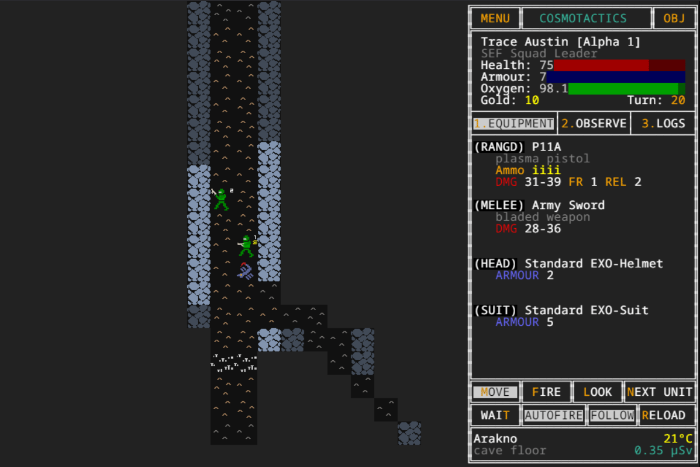

OPERATOR'S MANUAL
Introduction: What is This?
CosmoTactics is a squad-based tactical roguelike set in a gritty sci-fi universe. You are the commander of a Space Expeditionary Force (SEF) squad, tasked with exploring hostile alien planets. Navigate treacherous environments, battle a myriad of alien lifeforms, and lead your team to victory... or a heroic death.
Inspired by classics like XCOM and Rebelstar, CosmoTactics features deep, turn-based combat with a unique twist: simultaneous turns.
Core Mechanics
Simultaneous Turns
Unlike traditional turn-based games, you don't move your entire team and then wait for the enemy. In CosmoTactics, you issue an order to one selected unit. Once you confirm that action (moving, firing, waiting), all other units on the map (both friendly and hostile) will act simultaneously. This makes every decision critical, as the entire battlefield can change in an instant.
The Squad and Stances
You only directly control one unit at a time. The rest of your squad operates based on their assigned Stance. This is the heart of SEF squad command.
Follow: The default stance. The unit will attempt to follow the player-controlled unit, maintaining squad cohesion. They will still engage enemies if one gets close.Hold: The unit will stay in its current position, creating a defensive line or holding a chokepoint.
You can also toggle Autofire for each unit. When enabled, a unit will automatically fire at
any visible enemy in range, whether they are in Follow or Hold stance. A unit
with Autofire disabled will only return fire or fight in melee.
Field of View (FOV) & Fog of War
You can only see what your squad members can see. The map is covered in a fog of war.
- Visible Area: Brightly lit tiles are currently in a squad member's line of sight. You can see enemies and real-time changes here.
- Seen Area: Dimly lit tiles are areas you have explored but cannot currently see. You will remember the terrain, but you won't see enemies moving in the shadows.
Game Screen
The screen is divided into two main parts: the Game Map on the left, where the action happens, and the Information Panel on the right, which displays unit stats, logs, and interaction menus.
Controls
The game can be fully played with either the keyboard, the mouse, or a combination of both.
| Key(s) | Function |
|---|---|
| ↑ ↓ ← → | Move the cursor/target reticle. Navigate menus. |
| WASD QEZC / Numpad | Move the selected unit one tile (in Move mode). |
| Enter / Space | Confirm action (Move to/Fire at target). Select menu items. |
| M | Switch to Move mode. |
| F | Switch to Fire mode. |
| L | Switch to Inspect (Look) mode. |
| N | Select the Next playable unit in your squad. |
| O | Toggle Autofire for the selected unit. |
| P | Toggle Stance (Follow/Hold) for the selected unit. |
| T | Wait. The selected unit does nothing, and the turn proceeds. |
| R | Reload the selected unit's ranged weapon. This takes a turn. |
| Shift / Ctrl | Navigate tabs in the Information Panel (e.g., Equipment, Logs). |
| U | Use / Interact with an object at the cursor's location (e.g., pick up items, use stairs). |
| 0-3 | Quick-select tabs in the Information Panel. |
| Esc | Return to the Main Menu. |
Unit Roster
Weapon Systems
Understanding your equipment is key to survival. Every weapon has unique stats that define its performance in combat.
- Type: The category of the weapon (e.g., Laser Pistol, Projectile Rifle). Some enemies may be resistant to certain types.
- Damage: The average damage dealt on a successful hit, before armor is applied. The actual damage will vary slightly per shot.
- Range: The maximum number of tiles the weapon can effectively fire.
- Ammo: The number of shots currently in the weapon / The maximum number of shots the weapon can hold.
- Reload: The number of turns it takes to perform a full reload.
- Accuracy: The base chance to hit a target. This is modified by distance.
Stats & Skills
Every unit, friendly or otherwise, is defined by a set of core statistics.
- Health: The unit's life force. When this reaches zero, the unit is killed.
- Armor / Defence: Reduces incoming damage from attacks. This stat is primarily granted by suits and helmets.
- Attack: The base damage for a unit's melee attacks (when unarmed). Weapon damage overrides this.
- Speed: Determines how frequently a unit can act. A unit with a speed of 2 can act twice as often as a unit with a speed of 1. Player units have a speed of 1.
- Oxygen: A global resource shared by your squad. It depletes slowly each turn. If it reaches zero, your mission is a failure.
- Gold: Currency acquired during missions, likely for use between levels.
Items & Pickups
During your expeditions, you will find items and equipment. Use the U key or the GUI to interact with items on the ground when your cursor is over them.
- Oxygen Tank: A consumable that instantly replenishes a portion of your squad's shared Oxygen supply.
- Medkit: A consumable that instantly heals a small amount of health for every unit in your squad.
- Stairs: Not an item, but the objective. Move your whole squad near the stairs and use them to descend to the next, more dangerous level.